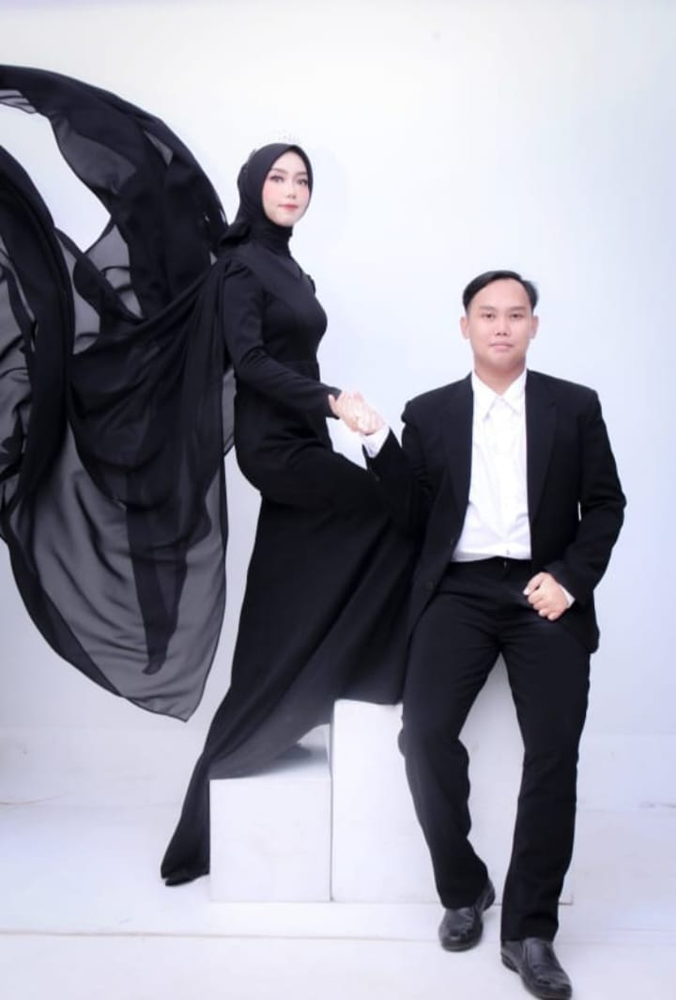
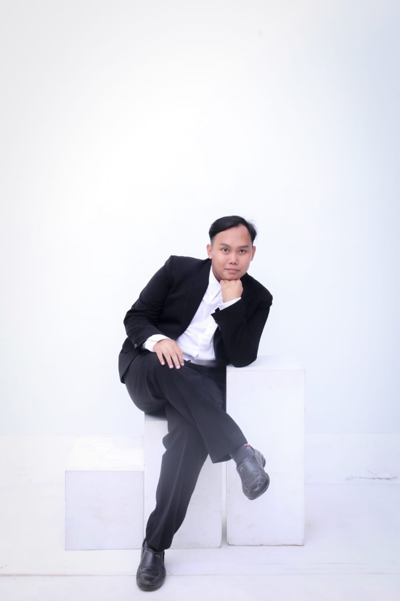
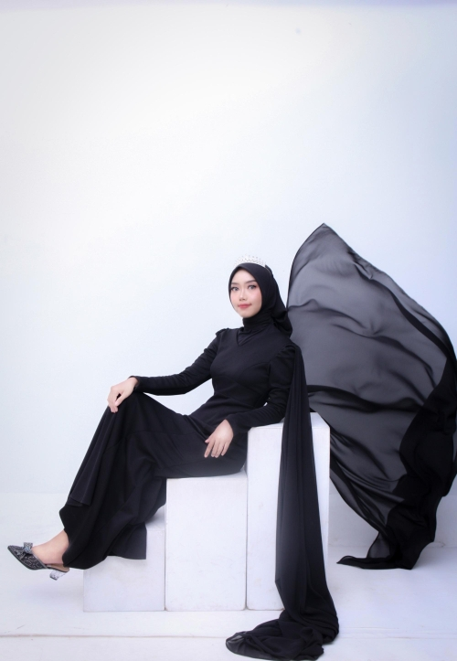

Di antara tanda-tanda (kebesaran)-Nya ialah bahwa Dia menciptakan pasangan-pasangan untukmu dari (jenis) dirimu sendiri agar kamu merasa tenteram kepadanya. Dia menjadikan di antaramu rasa cinta dan kasih sayang. Sesungguhnya pada yang demikian itu benar-benar terdapat tanda-tanda (kebesaran Allah) bagi kaum yang berpikir.
- Ar-Rum · Ayat 21 -
Atas Berkah dan Rahmat Allah Subhanallahu Wa Ta'ala. Tanpa mengurangi rasa hormat. Kami mengundang Bapak/Ibu/Saudara/i serta kerabat sekalian untuk menghadiri acara pernikahan kami :

💑 Mempelai
Dony Setiandi
Putra dari Bapak Endi Sukandi (Alm) & Ibu Kotimah
Lejarmanah,Karanganyar Kab.Subang
&
Eva Novia Sapitri
Putri dari Bapak Didin Suherman & Ibu Elawati
Ds.Bantarwaru Kec.Gantar Kab.Indramayu
Jika Bapak/Ibu/Saudara/i ingin memberikan hadiah secara digital, berikut informasi rekening kami:
Bank Multi Arta Sentosa
No. Rekening: 1002034367
a.n. Dony Setiandi
Bank Mandiri
No. Rekening: 1340027329183
a.n. Eva Novia Sapitri
Merupakan suatu kehormatan dan kebahagiaan bagi kami sekeluarga, apabila Bapak/Ibu/Saudara/i berkenan hadir dan memberikan doa restu. Atas kehadiran dan doa restunya, kami mengucapkan terima kasih. 🌸
🙏 Kami yang Berbahagia
Dony Setiandi & Eva Novia Sapitri
Keluarga Besar:
Bpk. Endi Sukandi (Alm) & Ibu Kotimah
Bpk. Didin Suherman & Ibu Elawati
Cerita Kami


Pertemuan :
Kami bertemu di tahun 2017,ketika masih duduk di bangku SMK saat kami sedang Praktek di Mimake Mart SMKN 1 Subang sebagai Kasir & Pramuniaga,tidak ada yang menyangka jika pertemuan pertama itu akan membawa kita pada sebuah ikatan pernikahan
Pendekatan :
Setelah lulus sekolah kami dekat,untuk mengenal lebih dalam satu sama lain,berjalan beriringan dengan tujuan dan harapan yang sama.
Perjalanan hubungan itu tidaklah mulus dan mudah.Up and Down hingga Break in relationship ditahun 2022
Pertemuan Kembali :
"Tidak ada yang kebetulan di dunia ini, semua sudah tersusun rapih oleh sang Maha Kuasa,kita tidak bisa memilih kepada siapa kita akan jatuh cinta"
Dan benar tanpa disangka-sangka,Kita bertemu kembali di tahun 2023,dengan versi terbaik karena dari perjalanan itu kita banyak belajar untuk membangun Hubungan yang lebih baik
Hingga akhirnya kita memutuskan untuk melangkah ke jenjang yang lebih serius.
Menikah :
Percayalah,bukan karna bertemu lalu berjodoh tapi karna berjodohlah maka kami dipertemukan,Kami memutuskan untuk mengikrarkan janji suci pernikahan kami dibulan Juni 2025.Insya Allah
Sebagaimana yang pernah dikatakan oleh sayyidina Ali bin Abi Thalib
"Apa yang menjadi milikmu akan kau temukan dengan sendirinya"